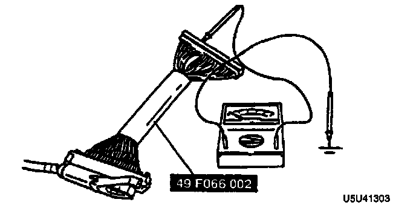
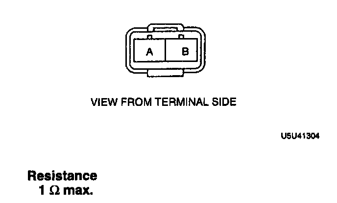

Hydraulic Assembly
ABS MOTOR INSPECTION (INCLUDING HARNESS TO ABS CONTROL MODULE)1. Turn the ignition switch off, and disconnect the ABS control module connector.

2. Connect the Special Service Tool (SST) to the ABS control module connector.
3. Measure the resistance between terminal X of the control module connector and a ground.
Resistance: 1 ohms max.
4. If not as specified, inspect the wiring harness between the ABS motor and the control module, and inspect the ABS motor.
ABS MOTOR INSPECTION
1. Turn the ignition switch off.
2. Disconnect the ABS hydraulic unit connector (2-pin).

3. Measure the resistance between terminal A of the ABS hydraulic unit connector and body ground.
Resistance: 1 ohm max.
4. Verify that the motor operates when applying 12 V to the terminal A.
5. If not as specified, repair the harness or replace the ABS hydraulic unit as necessary.